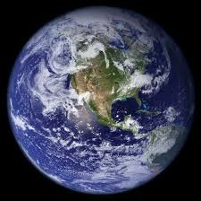

hello world!!!
AFEW FACTS ABOUT THE WRLD WE LIVE IN

La Terra è il terzo pianeta in ordine di distanza dal Sole e il più grande deipianeti terrestri del sistema solare, sia per massa sia per diametro.È il luogo primigenio degli esseri umani ed, essendo l'unico corpo planetario del sistema solare adatto a sostenere la vita come da noi concepita e conosciuta, è anche l’unico luogo nel quale vivono tutte le specie viventi conosciute.
Google Earth mostra una rappresentazione tridimensionale del terreno all'utilizzo dei dati DEM (Digital Elevation Model) collezionati durante la missione NASA Shuttle Radar Topography Mission. Da novembre 2006 sono stati integrati ulteriori dati DEM per migliorare la rappresentazione tridimensionale.
- Il programma non consente solamente di visualizzare le informazioni, ma consente anche al singolo utente di immettere delle informazioni aggiuntive che vengono visualizzate dal programma e che possono essere condivise con gli altri utilizzatori del programma sparsi per il pianeta.
- Google Earth mostra una rappresentazione tridimensionale del terreno all'utilizzo dei dati DEM (Digital Elevation Model) collezionati durante la missione NASA Shuttle Radar Topography Mission. Da novembre 2006 sono stati integrati ulteriori dati DEM per migliorare la rappresentazione tridimensionale
- Il linguaggio KML è utilizzato all'interno del programma per gestire dati geospaziali in tre dimensioni.
Google Earth mostra una rappresentazione tridimensionale del terreno all'utilizzo dei dati DEM (Digital Elevation Model) collezionati durante la missione NASA Shuttle Radar Topography Mission. Da novembre 2006 sono stati integrati ulteriori dati DEM per migliorare la rappresentazione tridimensionale.
- Il programma non consente solamente di visualizzare le informazioni, ma consente anche al singolo utente di immettere delle informazioni aggiuntive che vengono visualizzate dal programma e che possono essere condivise con gli altri utilizzatori del programma sparsi per il pianeta.
- Google Earth mostra una rappresentazione tridimensionale del terreno all'utilizzo dei dati DEM (Digital Elevation Model) collezionati durante la missione NASA Shuttle Radar Topography Mission. Da novembre 2006 sono stati integrati ulteriori dati DEM per migliorare la rappresentazione tridimensionale
- Il linguaggio KML è utilizzato all'interno del programma per gestire dati geospaziali in tre dimensioni.
| NAMES |
RADIUS |
Average
temperature |
| Venus |
6,052 |
462°C |
collegamento alla pagina